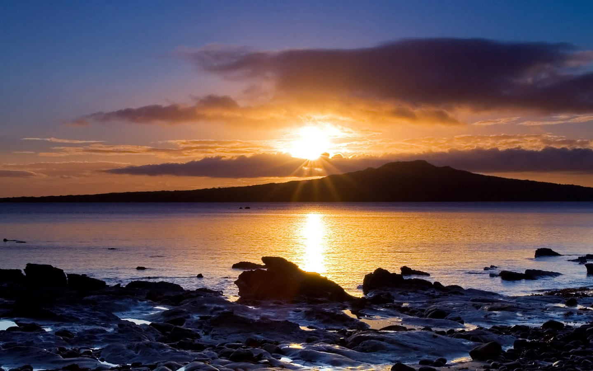
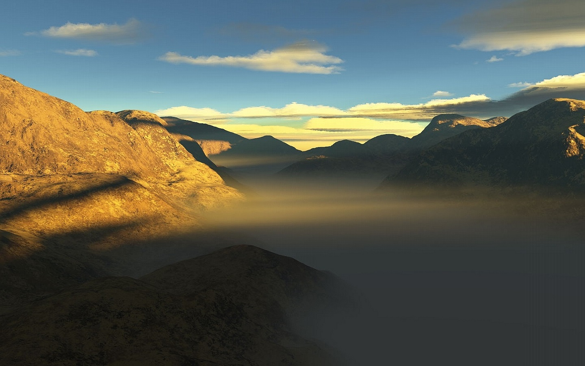
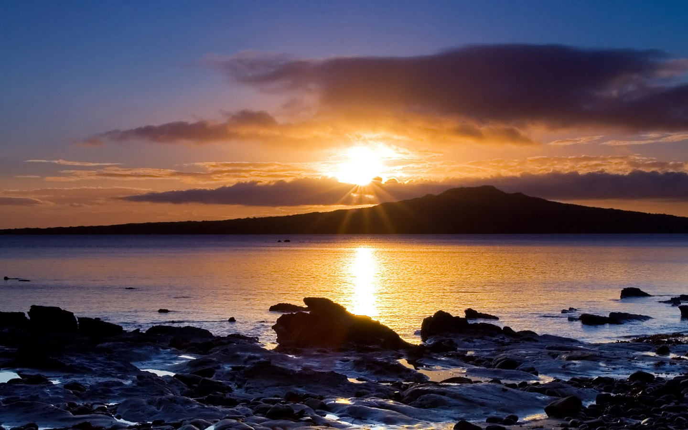
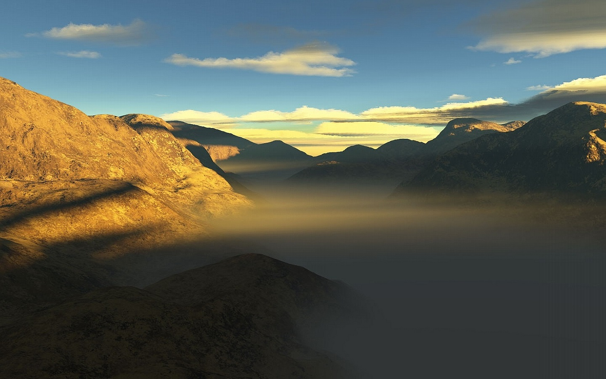

Салон красоты
бизнес-класса в Москве
Mountain lakes of Kyrgyzstan
Organizing any complexity of tours to Issyk-Kul, Son-Kul, around Kyrgyzstan and Central Asia, we guarantee you high quality of service and individual approach:
Kyrgyzstan is known for its beautiful landscapes with the high mountains and breathtaking alpine lakes. During this tour we will visit Sary-Chelek Lake, a gorgeous alpine lake surrounded by walnut and fruit forests and protected as a UNESCO biosphere reserve.
Further, we will visit Song-Kul Lake, famous by locals and foreigners for its beautiful location and we will travel around Lake Issyk-Kul, the second largest alpine lake of the world! To make the tour complete we will spend a few nights in a yurt and with local families, to get acquaintance with the traditions, handicrafts and national food. Come and enjoy the beauty of Kyrgyzstan during this unique tour of Travel Cruiser!

 



Day 1: Airport Manas - Bishkek - Toktogul (300 km/~4 h)
Upon arrival to Manas airport, meet a local guide/driver and depart to Toktogul.
On the way, pass through Too-Ashuu (3586 m) and Ala-Bel (3184 m) mountain highway Passes. Stop at Suusamyr Valley to taste some Kymyz (fermented mare’s milk). The road from Bishkek to Suusamyr is one of the most picturesque in the world. It wounds up and down several mountain passes above 3500 meter, before opening out to the green pastures of the Suusamyr valley where nomads live with their families in yurts.
Upon arrival to Toktogul, accommodation at a homestay. Dinner and overnight there.
Day 2: Toktogul – Sary-Chelek Lake (290 km/~4 h)
After breakfast, transfer to Sary-Chelek Lake.
Sary-Chelek is one of the most beautiful creations of nature that Kyrgyzstan has to offer. Nestled in between the steep vertical rocky slopes of the surrounding mountains, at approximately 1873 meters above sea level, it is the largest of the seven lakes within the natural reserve with depths reaching 234 meters. The lake gives life to hundreds of species like animals and plants, all to be observed in its vicinity.
Sary-Chelek is one of the most popular sites among Kyrgyzstan’s visitors.
Upon arrival to Arkyt village, accommodation at a homestay.
Day 3: Sary-Chelek Lake
Whole day walking/hiking excursion. Overnight in homestay in Arkyt village.
Meals: breakfast, lunch, dinnerDay 4: Sary-Chelek Lake - Arslanbob (330 km/~5 h)
After breakfast, transfer to Arslanbob walnut forest.
Arslanbob Valley is located in the Southern region of Kyrgyzstan and contains one of the most beautiful health resorts. Arslanbob is a unique creation of nature and is situated at 1,600 m above sea level.
The main treasure of southern forests is the walnut tree. The walnut trees can live up to 1,000 years, can reach enormous sizes, and they produce an abundance of walnuts.
Muslims consider the picturesque fruit forests to be sacred. According to legend, in the ancient times an extremely hardworking man called Arslanbob used to live there. Arslanbob used to serve the Prophet Muhammad. All those who visit the forest can take away with them a bit of its paradise. Overnight at a home stay.
Day 5: Arslanbob – Song-Kul Lake (570 km/~9 h)
After breakfast, transfer to Song-Kul Lake. Whole day travel. Overnight at a yurt camp.
Song-Kul Lake lies at an altitude of 3016 m, and has an area of about 270 km2 and volume of 2.64 km3. Lake's maximum length is 29 km, breadth about 18 km, and extreme depth of 13.2 m. It is the second largest lake after Issyk-Kul Lake, and the largest fresh water lake in Kyrgyzstan. Its name, meaning "following lake", is popularly considered to refer to this relation. A broad summer pasture and mountains surround it.
Day 6: Song-Kul Lake
Whole day rest and hiking/ horseback riding upon request.
Overnight at yurt camp.
Day 7: Song-Kul Lake – Manjyly-Ata (256 km/~4.5 h)
After breakfast, depart to Manjyly-Ata Valley which is located on the southern shore of the Issyk-Kul Lake.
On the way possibility to stop in Kochkor village to visit local handicraft’s retailer shop “Altyn-Kol".
Upon arrival to Manjyly-Ata, dinner and overnight in a yurt camp.
Day 8: Manjyly-Ata - Karakol (150 km/~2.5 h)
After breakfast, transfer to Karakol town.
On the way, stop for excursion to Jeti-Oguz Gorge and valley.
It's a lush valley with striking red sandstone rock formations (the «seven bulls» from which the valley takes its name). Jeti-Oguz is located about 35 km South West of Karakol.
As you approach the valley, you pass another rock formation which resembles a «broken heart». Legend has it that this is the heart of a beautiful woman who died of a broken heart after two suitors killed each other fighting over her. These two rock formations have become symbols of the Issyk-Kul region and are popular images for photographs and paintings.
Dinner and overnight at a homestay.
Day 9: Karakol – Chon-Kemin (305 km/~5 h)
After breakfast, transfer to Chon-Kemin Valley
On the way, visit Petroglyphs Museum in Cholpon-Ata town.
Overnight at a guesthouse.
Day 10: Chon-Kemin - Bishkek (135 km/~2.5 h)
After breakfast, have a half day excursion and some rest.
After lunch, depart to Bishkek with a stop in Tokmok town to visit Burana Tower.
Afterwards, transfer to Bishkek.
Upon arrival, have dinner at a local restaurant.
Overnight at a hotel.
Day 11: Bishkek – Manas Airport
Transfer to the Airport for the departure flight.
Meals: no